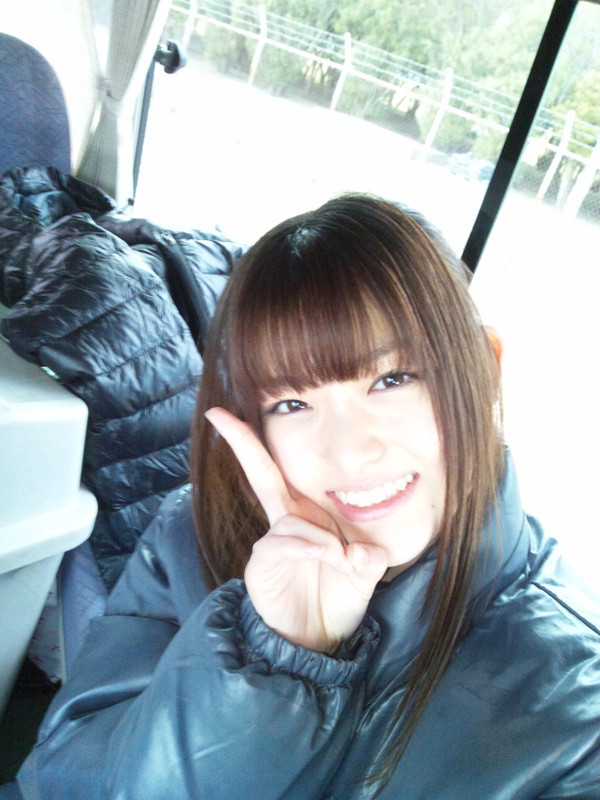

2012/0123Monあげるのっ(o・・o)
こんばんごっ(o・・o)
さゆりんごっ(o・・o)
リクエストアワーについて
いろいろなご意見ありがとうございます。
皆様のお気持ちを受け止めて
後ろ向きな気持ちはしまって
また進もうと思います！
私たちは技術も経験もない分
向上心を持ち続けて
皆さんとの絆を大切にして
一歩ずつこれからも学んでいきます！
頑張るー＞＜
はい、突然ですが！
乃木坂４６が
ドラマにでてます！
もうすでに ご存知の方もおられるようで！
感想ありがとうございます！
そう！
テレビ東京系列で
放送されてます、
渡辺麻友さん主演のドラマ
『さばドル』です＼(^_^)(^_^)／
私達がドラマにでれるなんて～
しかもまゆゆさん主演のにでれるなんて～
嬉しすぎました～＼(^^)／
乃木坂46頑張ってるので
良かったらみてくださいっ(。・ω・。)ゞ
乃木どこでの
演技力チェックの成果は!?
なんでなんよ～(*´ー｀*)
自分で掘りさげてしまったww
あっ！昨日の
乃木坂って、どこ？も
みてくれはりましたぁ？♪(ｏ・ω・)ノ))
モノマネ凄すぎでしたっ！
めっちゃ似てる!!
ほんまプロの方って
すごいなぁって思いました！
１月２２日
いくちゃん☆
れなりん☆お誕生日おめでとう☆
これからもがんばろね☆
ほなら、質問がえしのコーナー♪
Q. ショートにはしやんの!？
ほい！
ショートは悩んでます!!
めっちゃしたいねんけど
切りたくない!!
矛盾…φ(．．)
人生でショートのとき!?
さゆりんは
人生でショート経験ありません！
バレー部やったのにww
いつかするかも…？しないかも～(/-＼*)？
Q. とろろこんぶうどん！？
さゆりんはあんま食べやんけど
父がよく食べてました！
大阪の食べもんなんかな？
Q. 大阪出身ちゃうやろ！？
ええ～＞＜
生まれも育ちも大阪やで～＞＜
うちの関西弁が変なん！？＞＜
ちなみに祖母の代から
もしかしたらもっと前から
ずぅっと大阪やでな～☆
すみません＞＜
受験シーズン真っ只中＞＜
自信を失いそうなあなた！
さゆりんが
負の気分を吹き飛ばしてあげます！
う～
さゆりんごぱーんちっo(￣ー￣)○☆
そして
試験にレポートに頑張ってるあなたに！
色んな誘惑を吹き飛ばしてあげます！
う～
さゆりんごきーっく☆ミ
ほんで！
お仕事にバイトにと
頑張ってるあなたに！
寒さも風邪も吹き飛ばしてあげます！
う～
さゆりんごあっぱー( o・ω・o)ノ☆
ふ～(*´ー｀*)
今日はこれぐらいに
しといてやろう！
最近は毎日
色々な撮影してるんで
皆様のお目にかかるん
楽しみっ(*^^*)
ほなら、さらばじゃー＼(^_^)(^_^)／
皆様 風邪ひかないように＞＜
さゆりんでした☆
コメント(150)
朝からさゆりんごの笑顔が見れて幸せ。
全部チェックして見てるよ。
「ぐるぐるカーテン」もやっと聴けた！
めっちゃええ歌やん！
今日からリピートして聴く日々だなぁ
早く生で聴きたい！
さゆりんごに会いたい！
今日も頑張ってね～
物真似芸人スゴいよね!!タメになったかな。
よしっ！じゃあ、握手会の時に無茶ぶりします(笑)
今日も頑張ってこう
あっ、ぐるぐるカーテン良かったよ
いい意味で(＞∀＜)ｂ
さゆりんのショートも見てみたいな～（////）
僕も男の割に
髪が長いのですが
それで
切りに行くか迷ってます
さゆりんどうしたらいい？
ばっさり短くするか
切らない
で長いままか
さゆりん
答え待ってます！！(ノ・ω・)ノ
さゆりんごあっぱー効いたゼェーーーーーーッ！！
これで元気に働くよヽ(^o^)丿
さばドル見たいけど地方じゃ(´･ω･`)
なんでなんよーーーーー
乃木どこ見なきゃ（●＾o＾●）
さばドルで、さゆりんが
乃木坂⊿のなかで１番演技
上手だったよ(*´Д｀*)♪
あと１番かわいかったよう
すっごい目立つﾎﾟｼﾞｼｮﾝで!
結んでないさゆりんとか
もっと見たいからいろんな
髪型ぜひやってください！
さゆりんだあああいすき☆
さばドルもちろん見てるよ〜
めっちゃ可愛かった!!
さゆりんの台詞多くて推しとしては嬉しい(*^^*)
ショートさゆりんも見てみたい気はするけどもう少しロングのままでいておくれ(^^)/
あっぱーって…結局ぱんちやないかーい！笑
さゆりんブログ呼んでますます誘惑が増えたよ(*´∀｀*)←
毎日お仕事お疲れ様！
今週も頑張ろ〜
ではまた(^^)
まゆゆが電撃移籍…ノンフィクションだったらどーする？？？(笑)
しっつもんたーいむ
最近映画館で映画見た？
オススメは来週から公開のAKBのドキュメンタリーだよ
前回も見たけどメンバーの心情や陰でのひたむきな努力に今のポジションがあるんだなと納得したよ
これからの乃木坂メンバーにとって必ずプラスになると思うから是非見てほしいな！！
あ！
パンチやキックより…
さゆりんチューゥ(*^□^*)が欲しいな！
今日も東京は夜は雪予報だから防寒対策してお仕事にレッスンがんばりの(´∀｀)
ぢゃあ
今朝は道路がボコボコに凍って、市内のどの道路も
大渋滞でした(+_+)
残念ながら、私の住んでいる地方では、｢さばドル｣を
観ることが出来ません(ToT)
観れたら感想を書きますね(^^)d
さゆりんって、乃木坂46のメンバーの中で一番髪が長い
んじゃないですか(?_?)
ショートカットのさゆりんも見てみたいですが、
今まで維持してきた長い髪を切ってしまうのは、
もったいない気がします。。。
さゆりんの笑顔は、いつもとても素敵です(≧∇≦)
そして、さゆりんごあっぱーも頂戴したので、今週も
頑張れそうです!!
さゆりんも、今週のお仕事頑張ってくださいm(_ _)m
これからもずっと応援しています☆★☆
さゆりんごも頑張れー
こっちもアッパーパンチのおかげで何とか乗り切れそう！ありがとう
へばなっ
ショートも似合うと思うけど個人的にはロングのが好き(笑)
乃木坂46もいろんなお仕事増えてきたね！
頑張って応援してるよ！
髪はショートにしないで欲しいな～
ロング似合ってるし
乃木坂ってどこ？見たよん。
相手が高田純二さんなら絡みづらいかもね（笑）
昔モーニング娘。達も冨田コージさんと原口さんと
番組でモノマネで絡んだりしてたな～
なんか見てて懐かしくなったよ。
色んな撮影・・・・
早く見てみたいな～
楽しみにしてますね
名言「なんでなんよ～」はいつでるのかな？(笑)
あ！できればショートカットにしないで(>_<)
初コメさせて頂きます
番組は日曜の夜の最後の楽しみです(笑)
録画してますから毎晩の楽しみでもありますが(笑)
さばドルも良かったですよ！
首傾げるとこなんか、まゆゆさん越してる可愛さでっす！
寒いから風邪ひかないように気をつけて頑張ってください
関西では、やってない系？
29日(日)、オフやねん！
大阪来る？来る？
(≧▽≦)
ありがと～～！
こんにちりんご
｢さばドル｣に乃木坂が出てるだとこれは見るしか…
しまったぁ多分大阪ではやってないんですよね
んでもようつべでアップされるのを信じて見るからね
僕は今のさゆりんの髪型めっちゃ好きやで
ショートも似合うんかも知れんけどまだ今の髪型をキープして欲しいです
ちょうど明日からテスト何ですよ
｢さゆりんごきーっく｣さえ喰らったら明日はこれで100点です
しかも今ちょうど風邪ひいてるんですょ～なんでなんょ～
と思ってたら｢さゆりんごあっぱー｣
を喰らったらあれっ自然と鼻水が止まりました笑
こんな元気でオチャメなさゆりんが大好きです
さゆりんも風邪には気をつけて頑張ってね
さゆりんのショート
見たいかも
てか、アッパーは
パンチの一種なのでわ？
なので、
頭突きらへんが
無難なんじゃないかと…
さばドルちゃんと見たよ！なんでなんよ〜を思い出した(笑)。
質問はたこ焼き以来してなかったな〜。じゃ、質問。林檎ちゃんは自他とも認める大食いだけど、ラーメンだったら何杯いけそうですか？ちなみに俺は一杯が限度かな。
じゃ、またね！
乃木坂familyのもさきちより
２年くらい前はまゆゆも好きだった時期があったのでね、アニメ好きだし
そのまゆゆと乃木坂とコラボか見れて嬉しい！
最初はストーリー知らなかったので乃木坂46が出てきて衝撃でしたが(゜□゜;)
演技は、まあいつものさゆりんって感じで（笑）
ショートさゆりん…
まあ男だからよくわからないけど
あれだけ伸ばした髪をバッサリ切るって相当勇気がいりそう(((-.-;)))
でもいつかはアリだと思う！
もうちょっとロングを見てたい気もするけど（笑）
さゆりんごキックの方いただきましたm(_ _)m
あと一週間でテスト終わって春休みなので(大学はほんと早い)誘惑に負けずにがんばります!!
さて、テスト勉強ｶﾞﾝﾊﾞﾙかねー＞＜;
とりあえず録画してた乃木どこは今晩見るよ♪
ほなまたねー！
さゆりんごはりんごがすきだからさゆりんごなんですか？
早くあいたひ…(>_<｡)
応援してます
ドラマみてます、楽しみにしてます
ショートも見てみたい気はするけど、自分はロングのさゆりんめっちゃ好きです
あとさゆりんごきっくで気分が明るくなった気がします
さゆりん☆
前のコメ☆にも
書いたけど
さばドル☆
出演☆
おめでとう!!
台詞つきやん！
さゆりん☆
この流れのまま
よっしゃ～(^o^)／
リクエストアワーの件は 賛否両論やけど
圏外(T_T)
だけは 納得いってない(^_^;)
まだ 発売前やし
ブラックジョーク？
乃木坂☆メンバーに 失礼やぞ(;`皿´)
って
これからも
乃木坂☆を めっちゃ 応援していくぞ！ って 決意しました (^o^)／
「乃木坂ってどこ?」を見ましたよ
「会いたかったかもしれない」にもびっくりしたし料理にもまたw
CD予約したから発売したらロケ地めぐり行ってくるよ
まゆゆのドラマ、さゆりんが出てるの観てるよー来週もでるよね演技は…バッチリッス
あと、昨日の乃木坂って、どこオモシロかッたよ有名人と会った時の対応…さゆりんの時、あれはムズカシイよね～
さて僕は…さゆりんごあっぱーもらって頑張ります
触れちゃいけないことなのかと思ったよ(^-^)
さゆりんごぱーんち(ﾟ∀ﾟ)
やなぎの友達
明日でやっと高校の
卒業試験が終わるよ(o・・o)
さゆりんごきっくでがんばって
乗り切る＼(^O^)／＼(^O^)／
さばドル見たよ(^○^)
さゆりんうまかった♪♪
なによりかわいかった☆ミ
パンチよりキックよりアッパーより
りんごスマイルで
全部吹っ飛んだ〜《*≧∀≦》
大好き〜！
乃木どこでの演技力チェックの成果出てていい感じだよV(^-^)V
昨日の乃木どこも観たよ♪～θ(^O^ )
やっぱりあの２人のモノマネスゴいよね♪♪
接し方のコーナーのとき、さゆりんちょっと気を遣いすぎかな(^_^;)
とりあえず、挨拶ぐらいはしないとね!(b^ー°)
これからも頑張ってね♪～θ(^O^ )
キックが顔面に…
アッパーで顎が…
どうも
初コメしたらボコボコにされてるアリオスです←
どうしていきなり…
前置きはこれくらいにして〜
さゆりんごの関西弁ちょー好き♪
優しい感じがして、訛りの好きな自分に良い感じにきてます!!
乃木坂のメンバーの中でも最近は上位になってきました！
握手会は推しのメンバーに行っちゃうけど…ティッシュ配りで会えたら、関西弁聞きたいな♪
そこで一つ質問してみたり！
待ち受けにする写真は何がいいですかね？
よかったら貼ってくれると嬉しいです(o>ω
さばドル見たかった～＿|￣|○
から、つべで見ました(笑
初のドラマ最高でした
セリフも沢山あってより最高でした
自分もちょっと関西弁混じってます。
母さんが京都出身だか自分も自然と喋れるようになってました！
しかも、父さんは岐阜弁で、
今、家族で住んでるとこが名古屋らへなんで
関西弁と岐阜弁と名古屋弁が混じって、友達とかに喋ってる言葉がたまに理解されません(笑
がむしゃらに突き進みながら周りが全部見えれば一番いいんだけど、人間そんなに器用じゃないからね
ともかく今は頑張っていこう＼(^O^)／応援してるよ♪
さばドル見ましたwww
なんていうか…うん…よかったよwまたさゆりんの『なんでなんよ〜』見たいわ(´∀｀)
昨日の乃木どこみたよ〜
個人的にはななみんがツボ過ぎたw
最後にぐるぐるカーテンも見れて満足(>_<)可愛くっていい曲だよね〜歌詞もさすが秋元康だわ!!って感じでしたw
ロングの方が好きだけど、ワンチャンショートのさゆりん見てみたい(´∀｀)
あのさ、さゆりん必殺フルコンボで煩悩吹っ飛ぶどころか沸いて出てきたんだけど…どうしたらいい？ゎら
まあ頭さゆりんでいっぱいな今日は障害者心理学のテストと認知心理の実験ですが、とりあえずさゆりんごパンチでテスト乗り切ります(・∀・)ﾉ
さゆりんも風邪引かないように気を付けてね!!
ではでは〜
リクアワお疲れ様！俺もみたかったけど残念！(´Д` )
でも乃木坂ファミリーの前での初披露まで待つよー！＼(^o^)／
さゆりんごキックいただきました！個別握手会も行くからよろしく！
んじゃ＼(^o^)／
受験頑張ってきたよぉお！
乃木坂ってどこ？のさゆりん
今回も可愛かったよ(*´ω｀*)
今日のドラマめーっちゃ
期待してます(ノ)・ω・(ヾ)笑
乃木どこ？サバドルどっちも見ますた(^^)
またいつかテレビで
なんでなんよー
見れることを期待してますd(^_^o)
あー楽しみや！笑
鯖ドルみたよ!!さゆりん一番台詞あったね(≧ω≦)ｂ
いやーよかったよかった♪♪
まだテスト前で乃木坂ってどこみれてないよ(泣)
大学いそがしやー
演技力チェックの成果も少しは出てたんじゃないかな。。
前回の乃木どこはめっちゃ笑ったわぁ～～
やっぱプロのモノマネは違うね！！
ぐるぐるカーテンもよかったよぉ～～♪♪
さゆりんごパンチ＆キック＆アッパーで気が引き締まりました！！
これで一週間は頑張れるな(・∀・)
撮影頑張ってね☆
☆ハル☆
昨日、乃木どこ見たで
モノマネ凄かった
原口さんとか全部がそっくりやったな(笑)
関西弁とか地域によって微妙に違うよなぁ
ずっと神戸に住んでるけどたまに変って言われる(笑)
さゆりんも風邪には気をつけてな
いい１日にしてね
さばどるセリフあったね！
まゆゆとかどうでも良いからさゆりんいっぱい見たかった(笑)
ショートもいいけどさゆりんにはまだロングでいて欲しいな><
そっちのほうが良い！(・・;)
さゆりんこそお仕事頑張ってね！
こんちゃ。
Kackeyです。
俺ははっきり言う！
AKB48より乃木坂46の皆が大・大・大好きやねんから。
勿論、さゆりんも大好きやねんから。
このblogをとおして、お互いに絆を深めていきましょう。
俺、1/9にお休みして以降、毎日お仕事頑張ってます。
さゆりん、是非とも俺を応援して下さい。
じゃあね。
はじめまして、さきのこ言います＾ｐ＾
乃木どこもちろん見たよ＊
さゆりんのとまどってる姿めっちゃ可愛かった!
うちも三重出身だから方言にめっちゃ親近感ある
うち的には今のロングのさゆりんドンピシャ!ｗ
これからも応援しています＊
ちゃんとセリフあったね♪
まゆゆと乃木坂がどう絡んでいくのか楽しみですo(｀▽´)o
個別握手会にいくんだけどさゆりんはどんな話題だとテンション高山になるのカナ？
さゆりんご
さばドルもちろん見てるよ～
さゆりんめっちゃ目立ってたし、あの憧れだったまゆゆと一緒に共演できてホントに良かったね
乃木どこのぐるぐるカーテンも良かったよ～
さゆりんダンスすっごい頑張ったんだね
最初のレッスン映像の頃と比べると見違えるほどよくなってて、努力が映像を超えて伝わってきたよ
今日もお仕事がんばれ
さゆりんごパンチ返しっ
『さばドル』見ましたよ！やっぱ、さゆりんのしゃべりは
目立って、えー味出してたと思います。これから演技の仕事
どんどんあるんとちゃいますか？
しかし、残念なことに『さばドル』は関西でやってへんから、
悲しい(ToT)/~~~
さゆりんの口癖？なんでなんよ～(*´ー｀*)めっちゃかわいい
です(^○^)
１/２９のティッシュ配りはどこに行くんでしょうね？
やっぱ大阪かな？京都もええでー。
身体に気ーつけて、頑張って下さい。


さゆりんいっぱいセリフあったね
あれ毎週乃木坂出るのか??
乃木どこ？以外にも楽しみができた